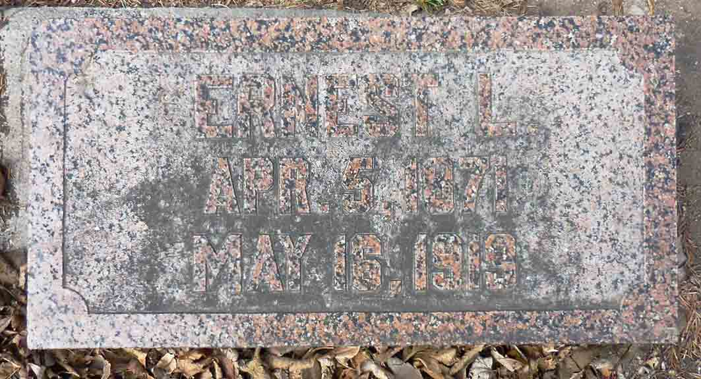
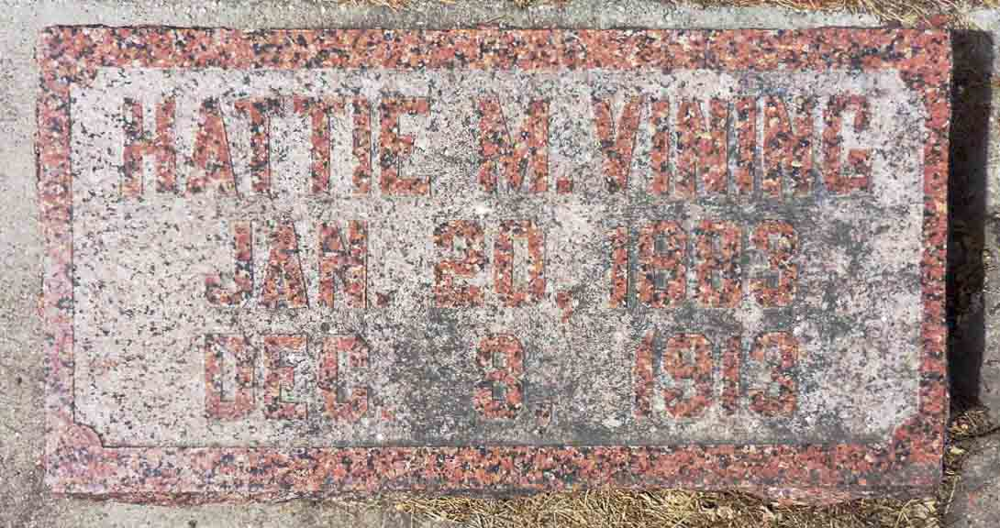
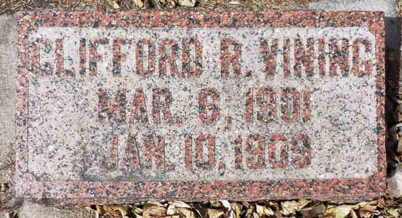

Documentation for Ernest L. Vining - Hattie M. Schoessow
Death Data
Gravestones for Ernest L. Vining and Hattie M. (Schoessow) Vining, in Watson Cemetery, Leonard, Cass County, North Dakota (from Find A Grave):


Gravestone for Clifford R. Vining, son of Ernest L. Vining and Hattie M. (Schoessow) Vining, in Watson Cemetery, Leonard, Cass County, North Dakota (from Find A Grave):

\